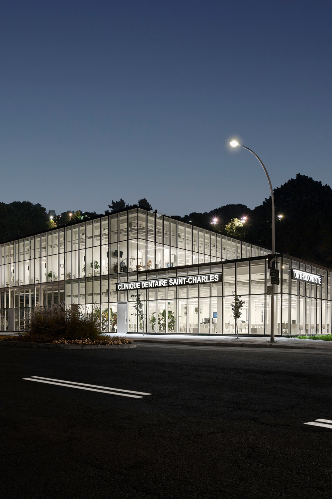
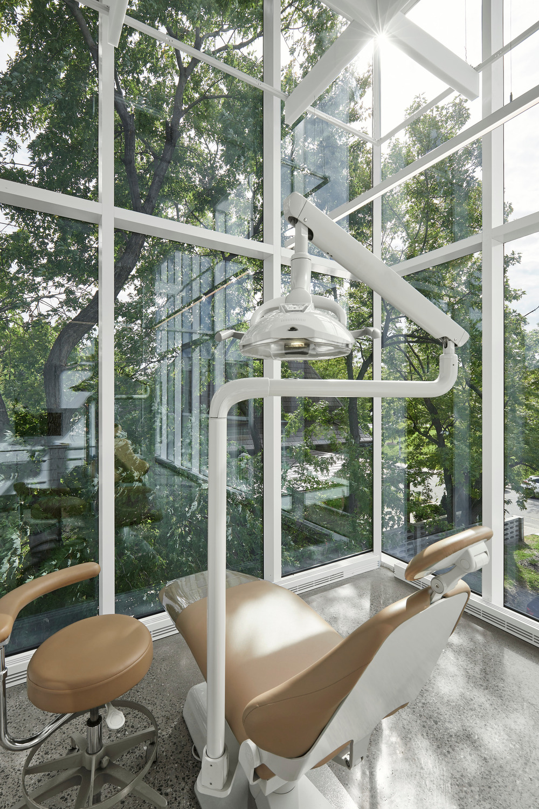
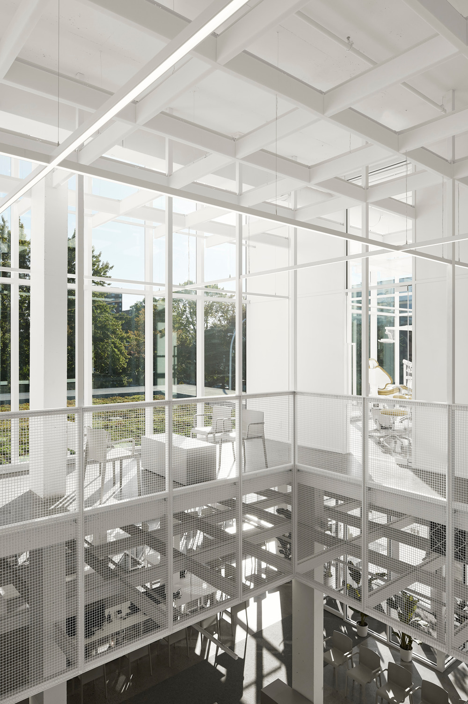
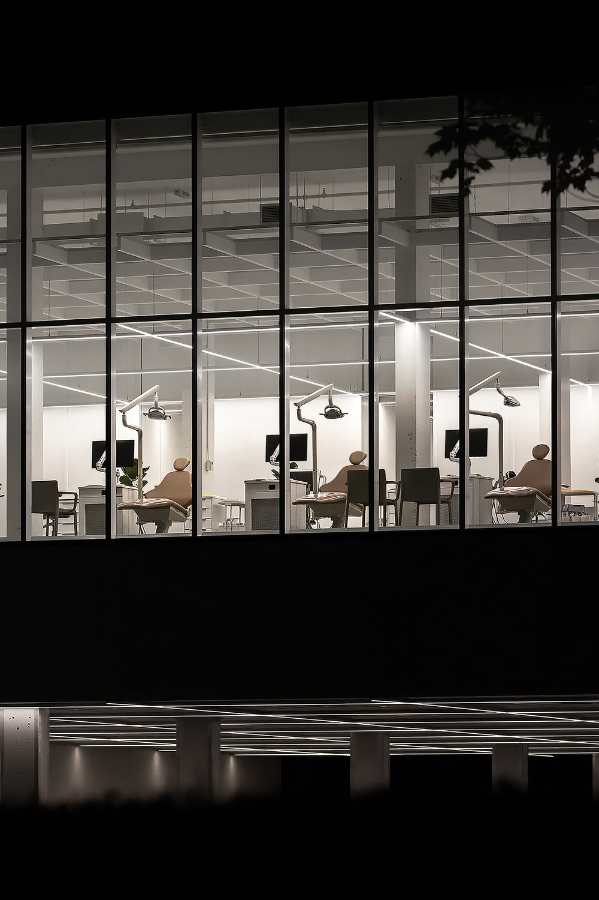
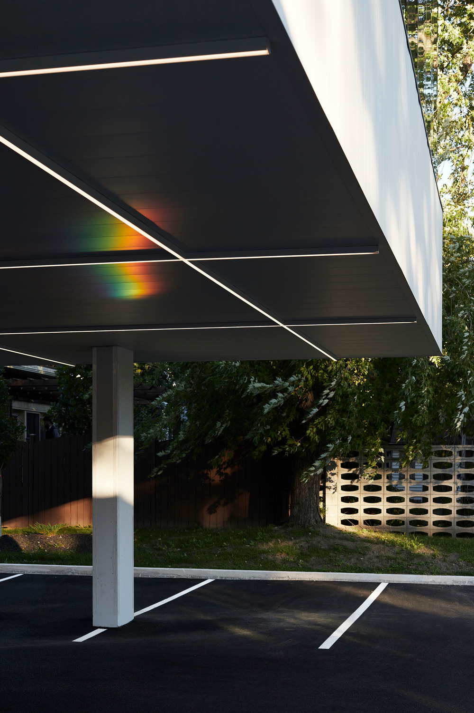

Studio Jean Verville architectes, Kanada’da Longueuil'in girişinde, konut ve ticari alanlar arasındaki atıl bir arazi üzerinde, biyofilik tasarıma uyan 2.600 metrekarelik bir diş kliniği tasarladı.

Dr. Anh Tuan Nguyen ve ekibinin aydınlık ve havadar bir kliniğe sahip olma ihtiyaçlarına yanıt verirken aynı zamanda “maksimum etki için minimum araç” felsefesine saygı duyan Stüdyo, malzemelerin ustaca kullanımına dayanan ve inşaatı titizlikle yürütülen basit bir müdahale tercih etmiş.

Clinique dentaire St-Charles, bitişikteki Catherine-Primot Park’ın yeşil alanlarını ve Longueuil şehrinin kentsel canlılığını vurgulayan bir mimari sunuyor.

Doğal unsurların psikofizyolojik stresi azaltan faktörler olarak kabul edilmesi nedeniyle, tasarımda güneş ışığına ve bitki örtüsüne büyük önem verilmiş. Klinik, yüksek performanslı düşük emisyonlu filmli ultra şeffaf cam yüzeyleri sayesinde bol ışık alıyor ve giydirme cephelerinin arasında yatıştırıcı bir atmosfer sunuyor.

Şeffaflık, hem yeşil hem de kentsel çevrede, mevsimsel değişiklikler, hava durumu ve yaya akışıyla görsel geçirgenlik oluşturarak hem müşteriler hem de tüm klinik ekibi için fayda sağlıyor. Buna bağlı olarak, kliniğin içinde yer alan profesyonel faaliyetler ve etkileşimler konusunda da bir açıklık sağlıyor.

Tamamı son teknoloji ekipmanlarla donatılmış ve evrensel erişilebilirliğe sahip otuz beş tedavi alanının dağılımı, hastaların ve klinik ekibinin üyelerinin çevredeki doğa ile olan görsel bağlantısını koruyor.

Clinique dentaire St-Charles, herkesin refahına katkıda bulunan biyofilik unsurların bir entegrasyonu olarak elde ettiği başarının ötesinde, kendisini canlı bir bağlama yerleştiren faaliyetler ve atmosferler üreterek sektörün canlılığına bir anlamda katkıda bulunuyor.

Kompleks aydınlatıldığında, hareketli Vieux-Longueuil ticari bölgesinin girişini sınırlayan bir simge görevi görüyor.